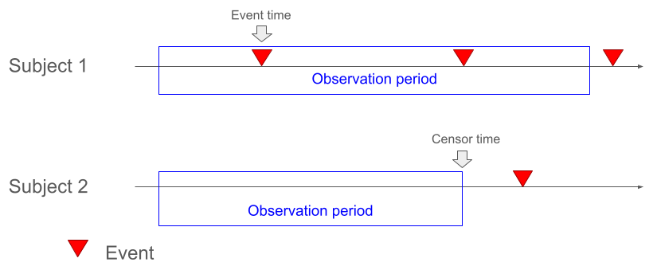
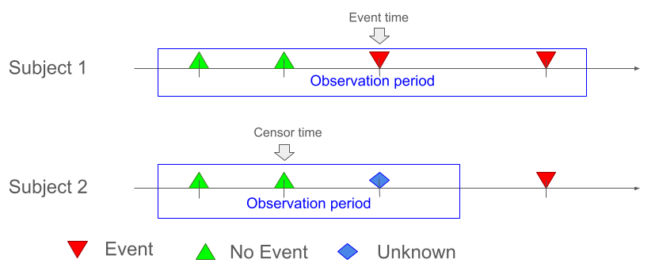
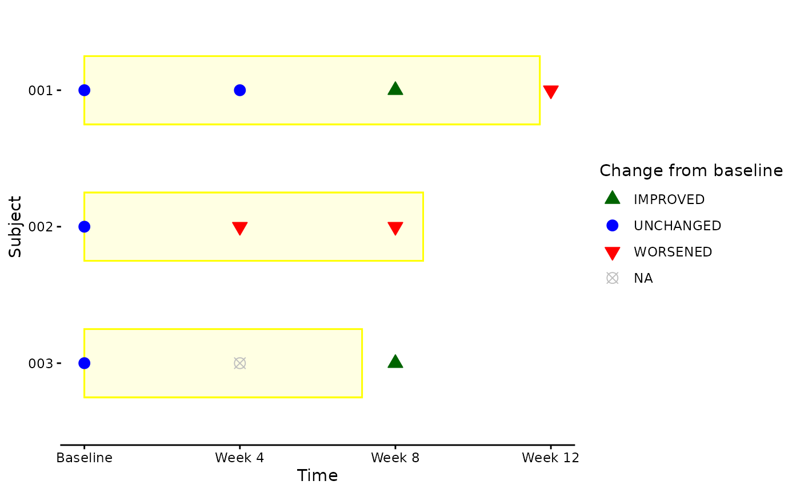
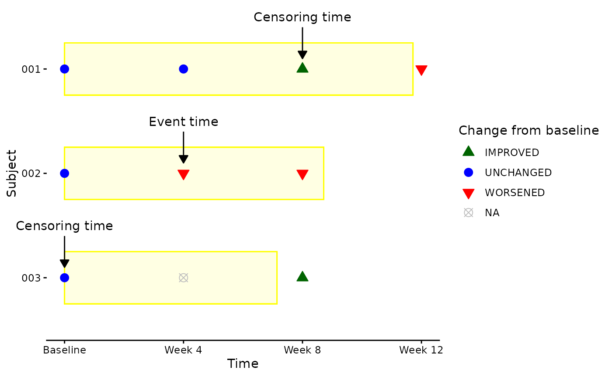
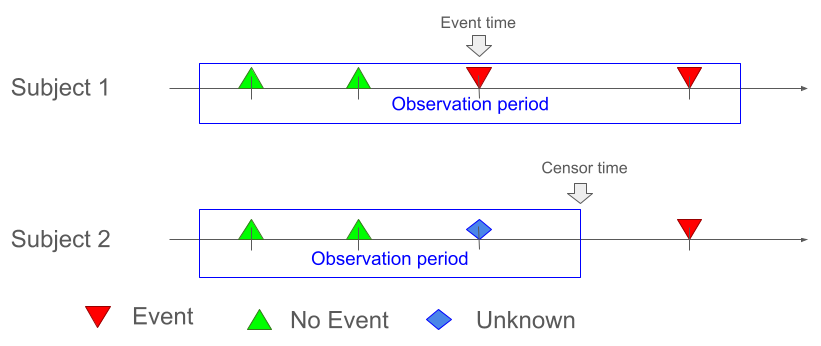
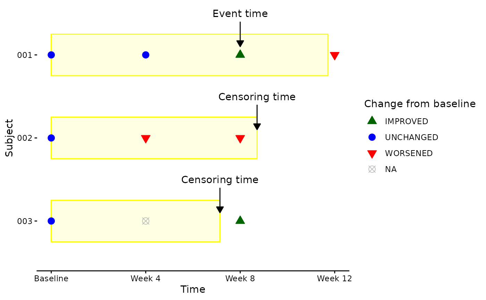

Introduction
The basic concept of preparing data for time-to-event analyses is quite simple:
- we need to know whether the event occurred or not
- if it did, the first time when it occurred is set as the event time
- if it did not, the last time when it is known that the subject didn’t had an event is set as the censoring time.
Depending on the definition of the event and the collection of the
data, the creation of a time-to-event ADaM dataset can be more or less
complex. In this vignette, we will discuss different scenarios and how
to derive the essential variables CNSR and
ADT. For a complete programming workflow see the Creating a BDS Time-to-Event ADaM vignette.
Observation Period
The observation period is the time during which the subjects are at risk of experiencing the event. Usually it starts at the beginning of the treatment. The end of the observation period is study- or analysis-specific. It may be derived from more than one date, e.g., the end of the treatment plus a fixed time, the end of the study, death, the start of an alternative treatment, …
The records of the input datasets need to be restricted to the
observation period. This can be done by deriving ANLzzFL
variables in the input datasets and then filtering the records based on
these flags.
Another option is to use the end_dates argument of the
derive_param_tte() function to specify the dates which
restrict the observation period. The input records are then
automatically restricted to records before the specified end dates.
Scenarios
There are three main scenarios to consider when deriving time-to-event datasets:
Continuous Assessments
The simplest case are events which are assessed continuously, e.g., death or adverse events. These can occur at any time within the observation period. It is assumed that the event didn’t occur if no event is recorded. In this case, the event time is the time of the first occurrence of the event and the censoring time is the end of the observation period.

Discrete Assessments, Negative Event
Many events require dedicated assessments to determine whether the event occurred or not, e.g., lab assessments, tumor assessments, questionnaires, etc. I.e., information about the event is available only at these time points and it may happen that for some assessments it is unknown if the event occurred or not, e.g., tumor scans were not readable or the score couldn’t be calculated because too few questions were answered. In this case, the event time is the time of the first assessment where the event is recorded. For the censoring time it depends on the type of the event. If the event is a negative event like death, worsening, adverse event, …, the most conservative approach is to ignore time points where it is not known if the event occurred. I.e., the censoring time is set to the time of the last assessment where it is known that the event didn’t occur.

For the examples, we will use the following questionnaire ADaM
dataset. The variable CHGCAT1 indicates whether the subject
worsened, improved, or was unchanged compared to baseline. For some
records it is unknown whether the subject worsened or not.
adqs dataset

A “time to worsening” parameter is derived by using
derive_param_tte(). By default a negative event is assumed,
thus the event_type argument doesn’t need to be
specified.
trt_end <- censor_source(
dataset_name = "adsl",
date = TRTEDT
)
worsening <- event_source(
dataset_name = "adqs",
filter = CHGCAT1 == "WORSENED",
date = ADT
)
valid_assessment <- censor_source(
dataset_name = "adqs",
filter = !is.na(CHGCAT1),
date = ADT
)
adtte <- derive_param_tte(
dataset_adsl = adsl,
source_datasets = list(adsl = adsl, adqs = adqs),
end_dates = list(trt_end),
event_conditions = list(worsening),
censor_conditions = list(valid_assessment),
set_values_to = exprs(
PARAMCD = "TTWORS",
PARAM = "Time to worsening"
)
)adtte dataset

Discrete Assessments, Positive Event
For positive events like improvement, response, …, the most conservative approach is to set the censoring time to the end of the observation period, even if it is not known whether the event occurred or not at this time point.

For positive events, the event_type argument of the
derive_param_tte() function can be set to
"positive".
improvement <- event_source(
dataset_name = "adqs",
filter = CHGCAT1 == "IMPROVED",
date = ADT
)
adtte <- derive_param_tte(
dataset_adsl = adsl,
source_datasets = list(adsl = adsl, adqs = adqs),
end_dates = list(trt_end),
event_type = "positive",
event_conditions = list(improvement),
censor_conditions = list(valid_assessment),
set_values_to = exprs(
PARAMCD = "TTIMPR",
PARAM = "Time to improvement"
)
)adtte dataset

Events Considering more than one Assessment
For some events it is necessary to consider more than one assessment. For example, improvement or worsening could require a confirmation at a subsequent assessment.
derive_param_tte() doesn’t allow to consider subsequent
records to decide whether an event occurred or not. Thus the
confirmation information needs to be derived in the input dataset, e.g.,
by deriving a variable or a parameter which indicates whether the event
is confirmed or not. Then this variable or parameter can be used in the
derive_param_tte() function to select the event
records.
Another option is to use derive_extreme_event() with
event_joined() objects to derive the time-to-event
parameter. This has the advantage that the input dataset doesn’t need to
be modified but it has the disadvantage that the results are harder to
review and trace back.
Combined Events
Some events are defined by a combination of more than one event,
e.g., for progression free survival the event is defined as progression
or death. For these events which are combined by “or” separate
event_source() objects can be created for each event and
then specified for the event_conditions argument of
derive_param_tte().
If events are combined by “and”, e.g., scale 1 improved and
scale 2 didn’t worsen, a variable or parameter needs to be derived in
the input dataset which indicates whether the combined event occurred or
not. Then this variable or parameter can be used in the
derive_param_tte() function to select the event
records.